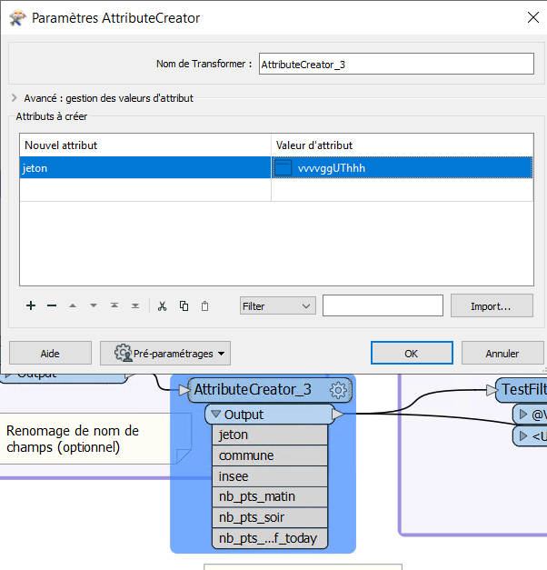
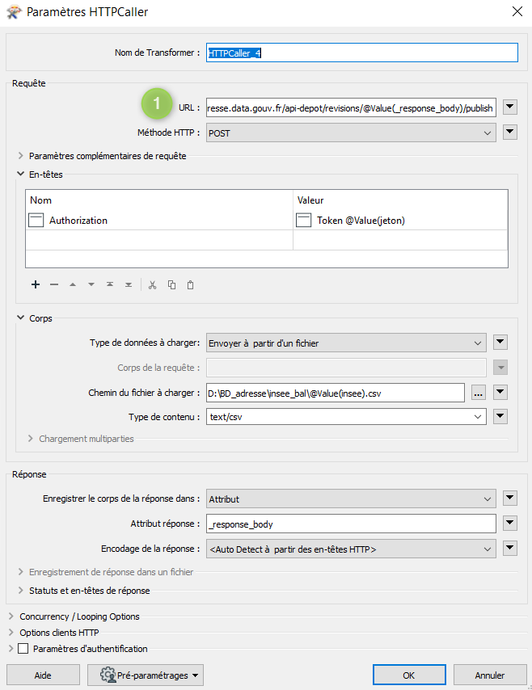
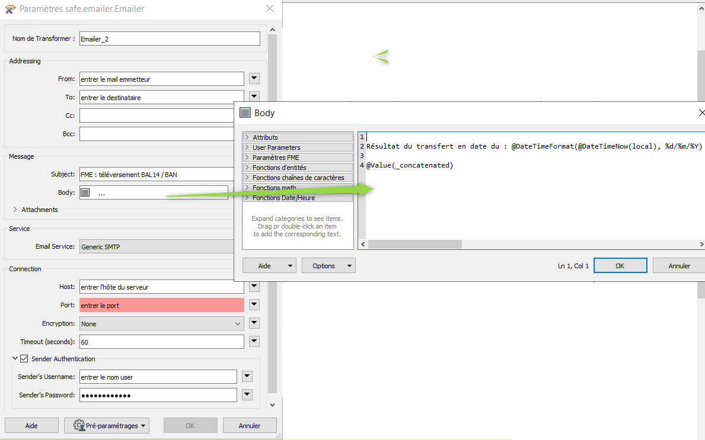

IV- Déposer une BAL via l’API BAN avec FME

Etalab, via sa plateforme adresse.data.gouv.fr met à disposition une API permettant de déposer les mises à jour de Bases Adresses Locales dans la Base Adresse Nationale.
Documentation github de l’API de dépot.
Les communes ou leurs représentants peuvent, avec un justificatif, obtenir une habilitation à déposer les fichiers adresses BAL sur un périmètre donné.
Ainsi, le Département du Calvados, dans le cadre de sa mission d’accompagnement à l’adressage des Communes, téléverse chaque nuit les fichiers BAL communaux certifiés par les Communes partenaires.
Boite à outils
La méthodologie développée ici s’appuie sur les travaux réalisés et publiés par l’Agglomération de la Région de Compiègne : github de l’ARC.
Elle repose sur le système de gestion de base de données PostgreSQL sous licence BSD et le logiciel ETL propriétaire FME développé par SAFE Software.
Ces développements ont été réalisés sous système d’exploitation Windows.
1ère Etape : Préparation des données
L’ensemble des données adresses mises à jours et certifiées quotidiennement par les Communes dans le cadre de l’accompagnement CD14 sont stockées dans une table (ici nommée adresse.v_bal_dept) au sein de la Base de Données SIG du Département.
Ces données sont structurées selont le modèle de données BAL attendu par l’API de dépot : ressources AITF voies-adresses.
Un validateur en ligne permet de vérifier que les fichiers à déposer répondent bien à ce standart : Validateur BAL adresse.data.gouv.
{kind=link}
Un traitement FME enregistre chaque nuit les entités adresses de cette table par commune dans des fichiers CSV nommés avec la valeurs INSEE de chaque commune ayant certifié son adressage (illustration ci-dessous)

Une seconde table de données regroupe l’ensemble des données adresses aglomérées à la Commune. Elle contient les champs suivants :
L’INSEE de la commune
Le nom de la commune
Le nombre total de points adresses recencés le matin avant 6h00
Le nombre total de points adresses recencés le soir après 23h00
Le nombre total de points adresses modifiés dans la journée (comptabilisé le soir après 23h00)
Les 3 derniers champs de cette table sont mis à jours quotidienement comme suit :
- 1- Mise en place de fichiers Batch pour exécution des script sql via psql
2- Ex2cution des script sql suivants :
- A 6h00 du matin* :
- A 23h00 le soir* :
2e Etape : Chaîne de traitement FME
Vous pouvez télécharger la dernière version du projet FME en cliquant sur le lien ci dessous :
2.1 - Ajouter les données sources
Ajout de la première table de données à l’échelle des communes dans le projet FME.

Supprimer les champs inutiles. Ne garder que les champs suivants :
Le nom communes du département
Leurs code INSEE
Le nombre de points adresses total par commune actualisé chaque matin
Le nombre points adresses total par commune actualisé chaque soir
Le nombre de points modifié dans la journée actualisé chaque soir
2.2 - Ajouter les jetons d’accès API
Utiliser le transformer AttributeCreator. Créer un nouveau champs “jeton” et attribuer la valeur de votre jeton d’accès à l’API.
{kind=link}
2.3 - Sélection des communes avec mises à jour de points adresse

Dans cette partie, nous ne conserverons que les communes dont au moins 1 point a été mis à jour dans la journée.
Pour cela :
Ajouter le transformer testFilter pour ne garder que les communes dont le compte de points de la journée (pts_modif_today) est égal ou supérieur à 1.

Supprimer ensuite les champs non nécessaires à l’agrégation, pour ne conserver que : le jeton, le nom de la commune et le code insee
2.4 - Sélection des communes avec suppression ou ajout de points adresse

Dans cette partie, nous ne conserverons que les communes pour lesquelles des adresses ont été suprimées ou ajoutées.
Pour cela :
Ajouter le transformer testFilter pour ne garder que les communes dont le compte de point du matin (nb_pts_matin) est différent du compte de point du soir (nb_pts_soir).
{kind=link}
Supprimer ensuite les champs non nécessaires à l’aggregation, pour ne conserver que : le jeton, le nom de la commune et le code insee
2.5 - Agrégation des communes filtrées
Une fois les deux filtres éffectués, on agrége l’ensemble des données avec le transformer Aggregator.
{kind=link}
2.6 - Requêtes à l’API

Le traitement pour dépot des BAL à l’API se déroule comme suit :
Mise à jour des adresses d’une Commune par dépot d’une nouvelle BAL qui écrase l’ancienne : REVISION
Téléversement du fichier au format BAL : TELEVERSEMENT
Validation des données transmises : VALIDATION
Publication de la nouvelle BAL : PUBLICATION
Récupération de la Réponse de l’API : REPONSE
REVISION
1- Utliser le Transformer HTTPCaller comme suit

Paramètres :
1 URL : https://plateforme.adresse.data.gouv.fr/api-depot/communes/@Value(insee)/revisions
2 Méthode HTTP : POST
- 3 En-têtes :
Nom = Authorization Valeur = Token @Value(jeton)
- 4 Corps :
Type de données à charger = Specify Upload Body Corps de la requête = { “context”: { “nomComplet”: “A remplacer”, “organisation”: “A remplacer” } } Type de contenu = json
- 5 Réponse :
Enregistrer le corps de la réponse dans = Attribut Attribut de réponse = _response_body
2- Récupérer l’ID dans la réponse avec les transformer JSONFragmenter et Tester comme suit :

TELEVERSEMENT
1- Utliser le Transformer HTTPCaller comme suit

Paramètres :
1 URL : https://plateforme.adresse.data.gouv.fr/api-depot/revisions/@Value(_response_body)/files/bal
2 Méthode HTTP : PUT
- 4 Paramètres complémentaires de la requête :
Nom = Content-MD5 Valeur = 1234567890abcdedf1234567890abcdedf
- 4 En-têtes :
Nom = Authorization Valeur = Token @Value(jeton)
- 5 Corps :
Type de données à charger = Envoyer à partir d’un fichier Chemin du fichier à charger = * Le chemin vers les fichiers CSV adresse par commune créés en partie I *Type de contenu = text/csv
- 6 Réponse :
Enregistrer le corps de la réponse dans = Attribut Attribut de réponse = _response_body
2- Récupérer l’ID dans la réponse avec les transformer JSONFragmenter et Tester comme précédemment pour la révision
VALIDATION
1- Utliser le Transformer HTTPCaller comme suit

Paramètres :
1 URL : https://plateforme.adresse.data.gouv.fr/api-depot/revisions/@Value(_response_body)/compute
2 Méthode HTTP : POST
2- Récupérer l’ID dans la réponse avec les transformer JSONFragmenter et Tester comme précédemment pour la validation
PUBLICATION
1- Utliser le Transformer HTTPCaller comme suit
{kind=link}
Paramètres :
1 URL : https://plateforme.adresse.data.gouv.fr/api-depot/revisions/@Value(_response_body)/publish
2- Récupérer l’ID dans la réponse avec les transformer JSONFragmenter et Tester comme précédemment pour la validation
A la fin de cette étape, vos adresses sont publiées sur la BAN.
REPONSE
1- Utliser le Transformer HTTPCaller comme suit

Paramètres :
1 URL : https://plateforme.adresse.data.gouv.fr/api-depot/communes/@Value(insee)/current-revision
2 Méthode HTTP : GET
2- Récupérer l’ID dans la réponse avec les transformer JSONFragmenter et Tester comme précédemment pour la validation
2.6 - Mail récapitulatif

Suite à la réponse de l’API, on supprime les champs inutiles pour ne conserver que :
Commune
Insee
response_body
Avec le Transformer StringSearcher, on extrait par expression régulière les valeurs de chiffres après rowsCounts. L’idée est ici d’extraire le nombre d’adresses publiées de la réponse API.
(?<=rowsCount”:)[w+.-]+
On créé ensuite un nouvel attribut comprenant le nombre de points extraits de la réponse suivi du texte que l’on souhaite ajouter.

Puis, on met en place une liste sur le champ précédemment créé et on va concatener la liste au niveau des sauts de lignes. Ceci pour n’obtenir qu’une seule entité à intégrer dans le mail.

Enfin, avec le transformer Emailer, on envoie dans le corps du mail la valeur de concatenation de liste.
{kind=link}
2.7 - Intégration du compte de points publiés dans la base de données

Après identification du compte de points publiés, on supprime les champs inutiles pour ne garder que :
Le nombre de points publiés extrait par StringSearcher (_rows)
Le code INSEE de la commune
On crée ensuite un champs date_depot_api avec la date du jour (AttributeCreator : @DateTimeFormat(@DateTimeNow(local), %Y%m%d)).
On insère finalement les données dans la table commune citée en partie I au niveau de la correspondance insee (DatabaseUpdater).
{kind=link}
3e Etape : Mailing automatique
En complément de la chaine de traitement détaillée précédemment, un bilan hebdomadaire est réalisé sur la base de données adresse du Département.
Ce bilan vise à recenser le détail des points adresses modifiés, supprimés et ajoutés sur les communes ayant publié leur BAN durant les 7 derniers jours.
Il est transmis chaque début de semaine au chef de projet adresse du Département et aux partennaires du projet (La poste, DGFIP, …).
3.1 - Enregistrement des données adresses
Chaque lundi à 4h (n7) et à 5h du matin (n0) :
Enregistrement au format CSV d’une table de données des adresses sur les communes publiées. Elle contient les champs suivants :
L’identifiant du point
Le nom de la commune et son code INSEE
L’adresse complète du point
copy (select a.id_point, a.commune_nom, a.insee_code, a.adresse_complete from adresse.v_point_adresse a, adresse.v_communes_publiees b where a.insee_code = b.insee_code ) TO 'D:\BD_adresse\bakup_adresses\v_point_adresse_dimanche.csv' DELIMITER ',' CSV HEADER NULL as 'NULL';
Enregistrement au format CSV d’une table de données des adresses modifiées durant les 7 derniers jours sur les communes publiées. Elle contient les champs suivants :
L’identifiant du point
Le nom de la commune et son code INSEE
L’adresse complète du point
La date de modification du point
copy (select a.id_point, a.date_modif, a.commune_nom, a.insee_code, a.adresse_complete from adresse.v_point_adresse a, adresse.v_communes_publiees b where a.insee_code = b.insee_code and (a.date_modif > current_date - integer '7')) TO 'D:\BD_adresse\bakup_adresses\v_point_adresse_dimanche_modif.csv' DELIMITER ',' CSV HEADER NULL as 'NULL';
Enregistrement au format CSV d’une table de données des adresses créées durant les 7 derniers jours sur les communes publiées. Elle contient les champs suivants :
L’identifiant du point
Le nom de la commune et son code INSEE
L’adresse complète du point
La date de création du point
copy (select a.id_point, a.date_creation, a.commune_nom, a.insee_code, a.adresse_complete from adresse.v_point_adresse a, adresse.v_communes_publiees b where a.insee_code = b.insee_code and (a.date_creation > current_date - integer '7') ) TO 'D:\BD_adresse\bakup_adresses\v_point_adresse_dimanche_creation.csv' DELIMITER ',' CSV HEADER NULL as 'NULL';
3.2 - Traitement FME
Chaque lundi à 4h30 du matin :
Vous pouvez télécharger la dernière version du projet FME en cliquant sur le lien ci dessous :
Le traitement se déroule comme suit :
Jointures des points adresse n0 - n7 , ne garder que les n0 non joints

comparaisons des points adresses modifiés n7 avec les adresses n0. Ajout champ modif_geom et modif_semantique pour connaitre la modif.

export csv pour pièce jointe des adresses suprimées et modifiées
Comptage des points adresse modifiés durant les 7 derniers jours et non créés durant les 7 derniers jours

Points adresses créés durant les 7 derniers jours
{kind=link}
Jointure des comptages et envoi du mail